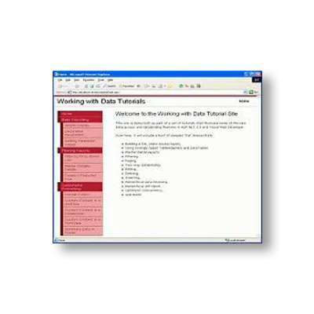

|
TUTORIALES |
|
|
El término tutorial es un neologismo de origen inglés que suele utilizarse en el ámbito de la informática. Se trata de un curso breve y de escasa profundidad, que enseña los fundamentos principales para poder utilizar algún tipo de producto o sistema, o para poder realizar una cierta tarea. Los tutoriales que pertenecen a la informática son pequeñas guías o compilados de instrucciones, destinados a los usuarios que no tienen la capacidad de manejo necesaria para utilizar un producto o servicio. |
| Se trata de los tutoriales donde se le explica al lector de una forma textual todos los pasos que debe de dar siguiendo un orden lógico. |
Este tipo de tutorial también se le suele conoce como video-tutoriales, donde se le explica al rector todos los pasos que debe seguir empleando para ello grabaciones de vídeo antes realizados y que llevan una secuencia u orden lógico. |
|
PROCESO DEL TUTORIAL UNOPlaneación Es necesario tener muy en claro lo que se quiere enseñar eso hace mucho más fácil la creación del video tutorial.DOSGuión En esta etapa se elabora el guion el cual nos permite estructurar bien lo que queremos hacer, de manera que se realiza:Tema y saludo: el titulo debe ser muy claro para que el espectador desea seguir viéndolo. Objetivos: especificamos brevemente cual es objetivo que lleva el tutorial. Contenido: se debe hacer todo paso por paso claro y conciso. Conclusión: puedes acabar el tutorial dando datos para comentarios o dudas. TRESGrabación Después del guion comenzamos a utilizar nuestra herramienta.CUATROEdición Algunas funciones de edición son de paga, para agregar textos, imágenes, flechas etc. Por eso se graba lo mejor posible desde un inicio.CINCOPublicación Una vez grabado y editado se publica en blogs o páginas web. |
|
|  |
EJEMPLOS Software Educativo http://www.lmi.ub.es/te/any96/marques_software/http://www.youtube.com/watch?v=P5bkGJ11gro Informática http://www.aulaclic.es/index.htmhttp://www.tutorialesdeinformatica.com/ |
 VER Infografía VER Infografía
|
Tema por : Cruz Galan Yosef Farid
SOFTWARE |
| Anterior | Menú | Siguiente |